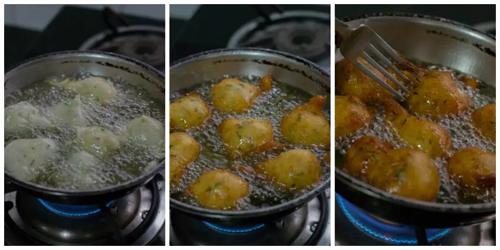

Mangalore Bonda, a popular South Indian dish, hails from the coastal city of Mangalore in Karnataka, India. This delectable snack is a perfect blend of flavors and textures, showcasing the rich culinary heritage of the region. The history of Mangalore Bonda is deeply rooted in the traditional South Indian cuisine, with its origins tracing back to local homes and street vendors. It has become a staple at tea stalls and snack counters across the region, gaining popularity for its unique taste and satisfying crunch. The main ingredient in Mangalore Bonda is urad dal (black gram), which is soaked and ground into a thick batter. To this batter, various ingredients such as finely chopped onions, green chilies, curry leaves, and grated coconut are added, enhancing the flavor profile. The mixture is then seasoned with mustard seeds, cumin seeds, and asafoetida, creating a fragrant and savory base. The distinctive shape of Mangalore Bonda is achieved by dropping small, round portions of the batter into hot oil, resulting in golden brown, crispy fritters. The exterior boasts a delightful crunch, while the interior remains soft and fluffy, creating a delightful contrast. Mangalore Bonda is often served with coconut chutney or a spicy tangy sauce, elevating its taste to a whole new level. The coconut chutney complements the savory notes of the Bonda, providing a refreshing and cooling element to balance the heat from the spices.
Mangalore Bonda Recipe
Ingredients Required
1/2 cups All purpose flour / Maida
1/4 cup Rice flour
1 teaspoon Salt
1/4 teaspoon Asafoetida
1 teaspoon Crushed Pepper
1 tablespoon finely minced Ginger (1 inch piece)
2 sprigs Curry leaves, finely chopped
1/4 cup chopped Coriander leaves (about 10 stalks)
2 Green Chillies, finely minced
1 tablespoon Sugar
1.5 - 2 cups Yogurt
1/4 teaspoon Baking Soda
Oil for deep frying
Instructions

Measure 1.5 cups of all purpose flour / maida and 1/4 cup of rice flour. This little amount of rice flour helps in crisping. Add in the salt, asafoetida and crushed pepper.
Add in very finely minced ginger, finely chopped curry leaves, finely chopped coriander leaves and finely minced green chillies. I also add a tablespoon of sugar. This small addition of sugar helps in browning of the bondas. Add in 1.5 cups of yogurt / curd and beat well to form a smooth batter. Add more yogurt if necessary to form a thick batter. Keep beating for couple of minutes until a very smooth, thick batter is formed. Rest the batter for 30 minutes up to an hour.
Once the batter has been rested, add in 1/4 teaspoon of baking soda and mix thoroughly. It should be a thick batter.
Heat oil in a kadai until medium hot. Add a small piece of the batter to check if the oil is ready. The oil is ready if the batter floats immediately to the top. If not wait for a minute more. Add in small scoops of the batter to the oil when the oil is ready.
Keep turning the batter balls so the batter cooks evenly on both sides. I use a fork to turn the batter. It works so well. Deep fry until its golden. Remove and drain on paper towels.
This Mangalore Bonda has to be served hot. It loses its crispness when it cools.
 South Indian Recipes
South Indian Recipes Mangalore Bonda, a popular South Indian dish, hails from the coastal city of Mangalore in Karnataka, India. This delectable snack is a perfect blend of flavors and textures, showcasing the rich culinary heritage of the region. The history of Mangalore Bonda is deeply rooted in the traditional South Indian cuisine, with its origins tracing back to local homes and street vendors. It has become a staple at tea stalls and snack counters across the region, gaining popularity for its unique taste and satisfying crunch. The main ingredient in Mangalore Bonda is urad dal (black gram), which is soaked and ground into a thick batter. To this batter, various ingredients such as finely chopped onions, green chilies, curry leaves, and grated coconut are added, enhancing the flavor profile. The mixture is then seasoned with mustard seeds, cumin seeds, and asafoetida, creating a fragrant and savory base. The distinctive shape of Mangalore Bonda is achieved by dropping small, round portions of the batter into hot oil, resulting in golden brown, crispy fritters. The exterior boasts a delightful crunch, while the interior remains soft and fluffy, creating a delightful contrast. Mangalore Bonda is often served with coconut chutney or a spicy tangy sauce, elevating its taste to a whole new level. The coconut chutney complements the savory notes of the Bonda, providing a refreshing and cooling element to balance the heat from the spices.
Mangalore Bonda, a popular South Indian dish, hails from the coastal city of Mangalore in Karnataka, India. This delectable snack is a perfect blend of flavors and textures, showcasing the rich culinary heritage of the region. The history of Mangalore Bonda is deeply rooted in the traditional South Indian cuisine, with its origins tracing back to local homes and street vendors. It has become a staple at tea stalls and snack counters across the region, gaining popularity for its unique taste and satisfying crunch. The main ingredient in Mangalore Bonda is urad dal (black gram), which is soaked and ground into a thick batter. To this batter, various ingredients such as finely chopped onions, green chilies, curry leaves, and grated coconut are added, enhancing the flavor profile. The mixture is then seasoned with mustard seeds, cumin seeds, and asafoetida, creating a fragrant and savory base. The distinctive shape of Mangalore Bonda is achieved by dropping small, round portions of the batter into hot oil, resulting in golden brown, crispy fritters. The exterior boasts a delightful crunch, while the interior remains soft and fluffy, creating a delightful contrast. Mangalore Bonda is often served with coconut chutney or a spicy tangy sauce, elevating its taste to a whole new level. The coconut chutney complements the savory notes of the Bonda, providing a refreshing and cooling element to balance the heat from the spices.